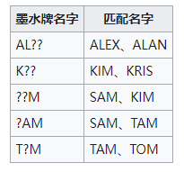

Safariwitnesstest
Board Game Arena 官方规则文档
【概述】
在限定时间内，在未知区域寻找出与线索卡牌拥有一致内容的卡牌。
【玩家回合动作】
玩家获得一张卡牌，假设内容:纹理-条纹、名字-ALAN、颜色-紫色、动物-大象。在未指认区寻找一张拥有以上其中内容之一的，如果内容一致归到自己档案区，指认失败需要摆放回未知区域，所有玩家都能看到指认失败的卡牌。
【没有卡牌匹配】
玩家在指认前，认为未知区域没有卡牌匹配时，可以发起挑战。挑战为在未知区域翻出至少4张与线索卡牌完全不匹配，其中一张失败则视为挑战失败。挑战失败后需要把卡牌放回未知区域。
【再抽一张】
玩家在指认前，可以再抽一张，任意一张匹配失败，则视为全部失败，需要全部放回未知区域。
【如何使用墨水卡牌】

【墨水牌能使用技能吗？】
可以的，如果KIM与K??通过名字匹配能使用KIM技能。
注意：AL？？在档案区置顶后默认触发ALEX技能
【技能】进阶模式
通过名字TAM、TOM、SAM、KIM、KRIS、ALAN指认成功并卡牌归档到档案区后按照指认成功顺序逐一触发技能。
ALAX技能需要在档案区第一张并在指认时触发技能，ALAX技能能与ALAN技能同时使用。
【目标卡牌】
假如开启了目标卡牌，游戏开始前会随机得到一张目标卡牌，在游戏过程中按照目标卡牌收集内容，在游戏结束后会根据目标卡牌内容额外加分。
【游戏结束】
当有玩家档案区达到10张卡牌或以上，立即结算游戏。
【游戏分数】
档案区一张卡牌得一分，如果开启了目标卡牌，目标卡牌会额外加分。分数相同下，档案区卡牌最多者为胜利方。